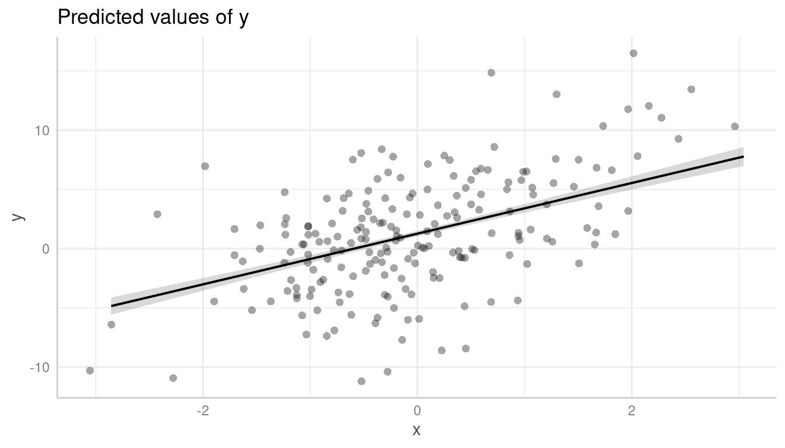
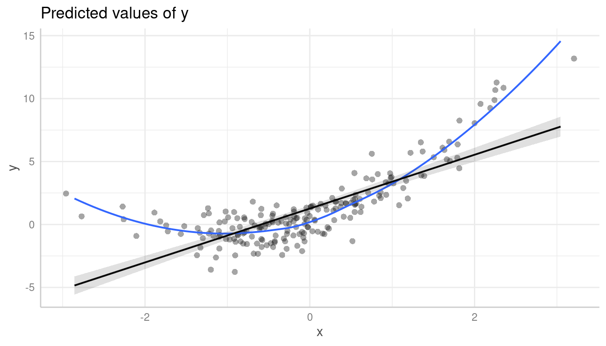
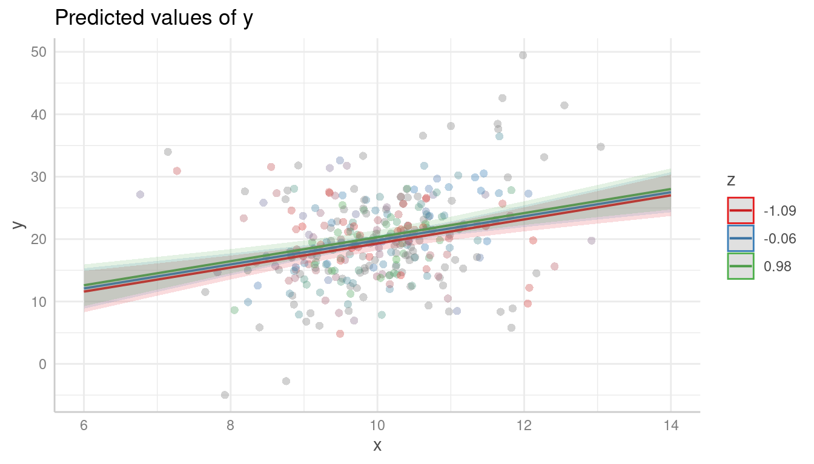
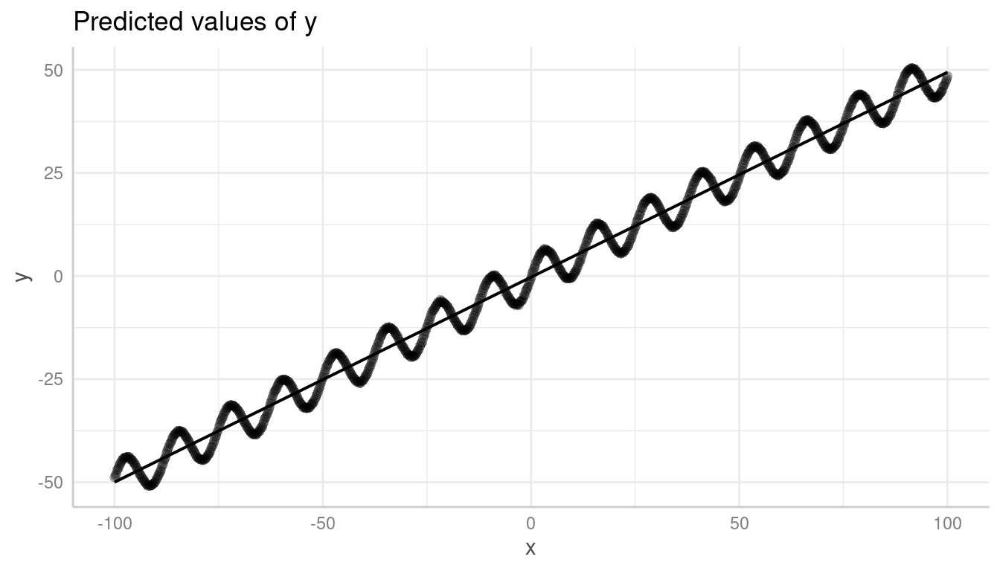

Introduction: Adding Partial Residuals to Marginal Effects Plots
Daniel Lüdecke
2020-11-09
Source:vignettes/introduction_partial_residuals.Rmd
introduction_partial_residuals.RmdPlotting partial residuals on top of the estimated marginal means allows detecting missed modeling, like unmodeled non-linear relationships or unmodeled interactions. In a nutshell, it allows Visualizing Fit and Lack of Fit in Complex Regression Models with Predictor Effect Plots and Partial Residuals (Fox & Weisberg 2018).
To add partial residuals to a plot, add residuals = TRUE to the plot() function call. Unlike plotting raw data, partial residuals are much better in detecting spurious patterns of relationships between predictors and outcome.
Detecting non-linear relationship
Let’s look at an example with a non-linear relationship. The missed pattern is not obvious when looking at the raw data:
library(ggeffects)
set.seed(1234)
x <- rnorm(200)
z <- rnorm(200)
# quadratic relationship
y <- 2 * x + x^2 + 4 * z + rnorm(200)
d <- data.frame(x, y, z)
m <- lm(y ~ x + z, data = d)
pr <- ggpredict(m, "x [all]")
plot(pr, add.data = TRUE)
However, it becomes more obvious with partial residuals:
plot(pr, residuals = TRUE)
It is even more obvious, when a local polynomial regression line (loess) is added to the plot. This can be achieved using residuals.line = TRUE.
plot(pr, residuals = TRUE, residuals.line = TRUE)
Detecting missed interactions
Here is another example, which shows that the partial residuals plot suggests modeling an interaction:
set.seed(1234)
x <- rnorm(300, mean = 10)
z <- rnorm(300)
v <- rnorm(300)
y <- (4 * z + 2) * x - 40 * z + 5 * v + rnorm(300, sd = 3)
d <- data.frame(x, y, z)
m <- lm(y ~ x + z, data = d)
pr <- ggpredict(m, c("x", "z"))
# raw data, no interaction
plot(pr, add.data = TRUE)
Again, it is recommended to add a loess-fit line to the residuals:
plot(pr, residuals = TRUE, grid = TRUE, residuals.line = TRUE)
Modeling the interaction clearly catches the pattern in the data better.
m <- lm(y ~ x * z, data = d)
pr <- ggpredict(m, c("x", "z"))
plot(pr, residuals = TRUE, grid = TRUE, residuals.line = TRUE)
Using the complete range of values
ggeffects usually “prettyfies” the data and tries to find a pretty sequence over a range of a focal predictor, to avoid too lengthy output, particularly for continuous variables (see section pretty value ranges in this vignette).
This, however, might be misleading in some cases when creating residual plots. In the next example, we have a sinus-curve pattern for the residuals, which is hidden by default:
set.seed(1234)
x <- seq(-100, 100, length.out = 1e3)
z <- rnorm(1e3)
y <- 5 * sin(x / 2) + x / 2 + 10 * z
m <- lm(y ~ x + z)
pr <- ggpredict(m, "x")
plot(pr, residuals = TRUE)
In such cases, it is recommended to use the all-tag in the terms-argument.

References
Fox J, Weisberg S. Visualizing Fit and Lack of Fit in Complex Regression Models with Predictor Effect Plots and Partial Residuals. Journal of Statistical Software 2018;87. https://www.jstatsoft.org/article/view/v087i09